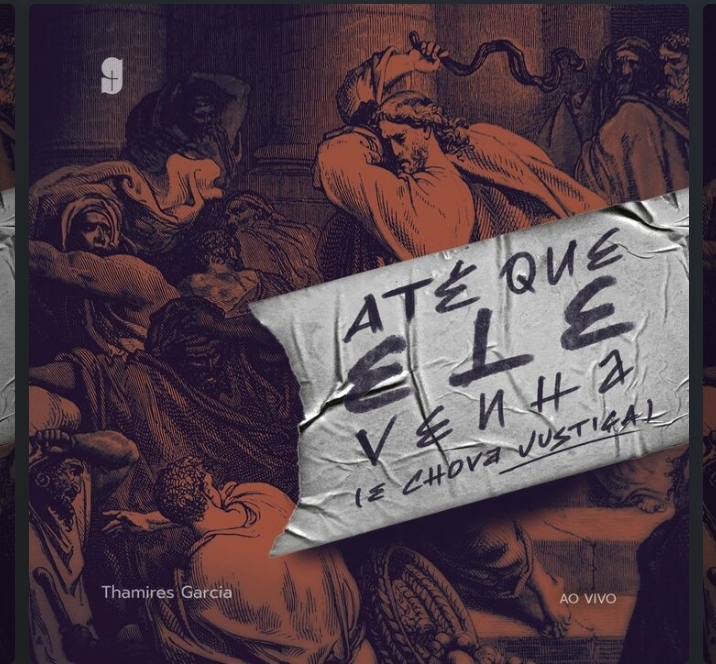
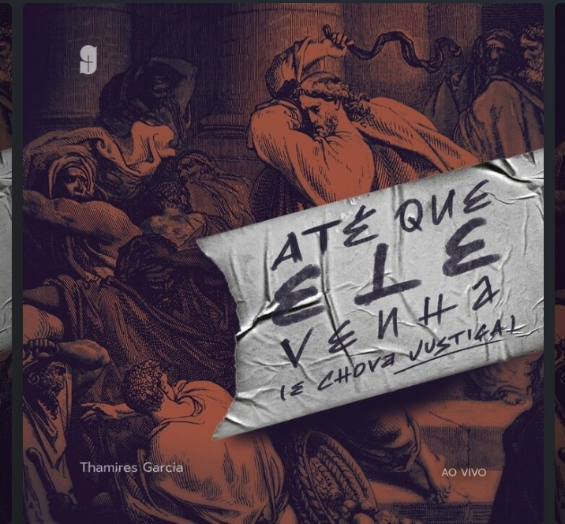

Dança Cristã
Danço desde os 11 anos na igreja, através da dança entrego ao Senhor aquilo que está dentro mim e que não sou capaz de expressar em palavras. Quando danço, me sinto dançando com o próprio Senhor e sendo envolvida pelo seu espiríto. Em cada movimento posso também fazer uma oração a Ele e profetizar pela dança trazendo a existência aquilo que ainda não existe, mas que é da vontade do Senhor para seu povo.
Leitura
Sempre gostei muito de ler, meus autores favoritos são Augusto Cury, Lycia Barros, Thamires Garcia, Paul Washer... Romance, auto-ajuda, religião... A leitura é capaz de nos transportar e aflorar nossos sentimentos. E meu livro favorito e interminável, é a Bíblia, me acompanha em toda minha vida e sua leitura não tem fim. Um livro que se renova todos os dias passe o tempo que passar.
Músicas
E como alguém que gosta de dançar e ler, não poderia ser diferente com relação a música. Através de letras que penetram nossa alma e melodias que nos levam a dançar, a música faz parte dos meus momentos de descanso, dos meus momentos de parar e refletir ou de me relacionar com o Senhor. Além de fazer parte de cada dança.